在移動中落腳 — — 新進教師徐洛文的認同與發聲實踐
文／洪敬慧 剛抵台八週，徐洛文在開學前，到達這座既熟悉又陌生的城市。 不停遷移的人生軌跡 台大新聞所助理教授徐洛文（Lokman Tsui）形容自己的人生軌跡，從不出自長期規劃。徐洛文父母因經濟因素，…
NEWS
文／洪敬慧 剛抵台八週，徐洛文在開學前，到達這座既熟悉又陌生的城市。 不停遷移的人生軌跡 台大新聞所助理教授徐洛文（Lokman Tsui）形容自己的人生軌跡，從不出自長期規劃。徐洛文父母因經濟因素，…

注意事項 請於115年3月9日（一）17時前繳交下列資料至新聞所辦公室（新聞所200室）： 大學歷年成績單正本壹份（應屆畢業生最後一學期除外） 個人資料表三份（請至本文下方下載） 請於口試前，繳交口試…

新聞所教授劉好迪（Adrian Rauchfleisch）榮獲114年度國科會傑出研究獎～ 🏅 國科會完整獲獎名單： https://ais2m.ncku.edu.tw/upload/files/%E…
EVENTS

主辦單位｜財團法人卓越新聞獎基金會 協辦單位｜台灣大學新聞研究所 論壇時間｜2026年7月4日～2026年7月5日 論壇地點｜台灣大學法學院霖澤館國際會議廳 本屆論壇以「AI科技下的新聞編輯室挑戰」為…

當代媒體實務講座 講座分享 講題｜我的新聞人生路 講者｜李四端（現任大雲時堂主持人、MOMOTV董事長；曾任台視、華視主播、新聞部經理、 TVBS、東森等電視台主管、主持人） 時間｜2026年4月17…

文／洪敬慧 這學期台大新聞所新開「時事議題製作實務」課程，授課教師詹怡宜說，這學期學生將在棚內完成政論節目錄製。從議題設定、設計標題、邀來賓，到現場所有安排，都由學生規劃與執行。透過實際製作，同學不僅…

時事論壇製作實務 講座分享 講題｜流量vs公共討論？主持人陳信聰的媒體實踐 講者｜陳信聰（華視新媒體部經理、網路節目《我想問的是…》主持人） 時間｜2026年3月13日（五）下午3:30 - 5:30…

文／洪敬慧 台大新聞所新設「數位新聞領域專長」課程，邀請大學生接觸媒體素養、新聞寫作等實務課程，整合數位敘事能力，製作出數位新聞專題。此領域專長課程，其中兩堂通識課「新聞寫作」、「當代媒體實務講座」於…

Attacks on journalists are evolving and increasing, both in quality and quantity, all over the world…
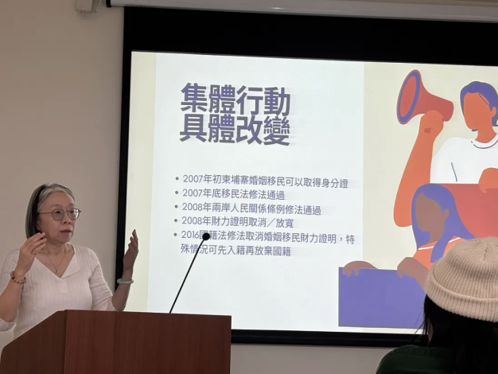
文／洪敬慧 國立政治大學社會工作研究所教授夏曉鵑於去（2025）年12月，於質性傳播研究方法課堂上分享，作為新住民組織培力者，如何培力新住民在臺灣社會中，擁有自己的主體性，為自身基本權益發聲。夏曉鵑回…
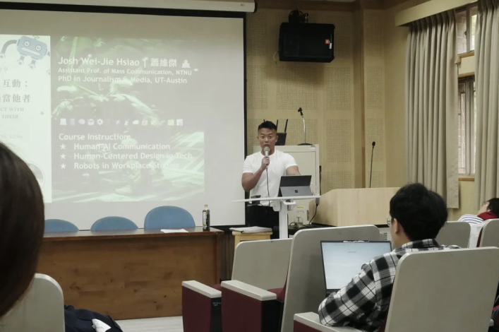
文／洪敬慧 傳播理論課程於去（114）年12月，邀請國立臺灣師範大學大眾傳播研究所助理教授蕭維傑演講。他提及，傳統傳播研究把訊息當作影響行為的核心，較少討論科技物的設計與媒介造成的影響。他指出，當今複…
NEWS

【平面及網路（文字）類 特寫新聞獎】 拯救失智囚徒 / 今周刊 陳禹蓁 完整報導連結：https://reurl.cc/LQ50bL 【平面及網路（文字）類 解釋報導獎】 【廢墟少年二部曲】凝視深淵…

【學生新聞報導獎／首獎】 未成年無照駕駛專題 — 柯采瑜、張童寧、楊仁 完整報導連結：https://reurl.cc/0WekEA、https://reurl.cc/OmoQvD

【散文獎首獎】 翁佩嫆〈菊島菜菜子〉 獲獎報導：https://art.ltn.com.tw/article/breakingnews/5239331 【新詩獎三獎】 羅毓嘉／耶路撒冷 獲獎報導：ht…
115學年度碩士班甄試招生口試榜單已公告。 口試通過名單請參閱本所公告欄或教務處網頁。 錄取同學請依規定時間辦理報到手續。

115學年度碩士班甄試招生簡章已公告，歡迎對新聞傳播有熱忱的同學報考。 報名時間：114年10月1日至10月15日 口試日期：114年11月中旬 放榜日期：114年11月下旬 詳細資訊請參閱台大教務處…
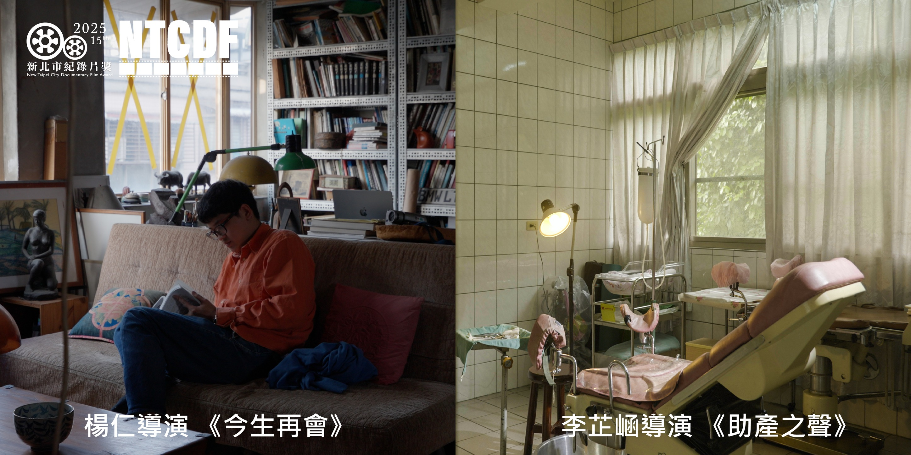
恭賀本所碩士生楊仁同學以作品《記憶的河流》獲得「新北市紀錄片獎」優選殊榮！ 該作品深入探討淡水河流域的環境變遷與在地記憶，以細膩的影像語言記錄下珍貴的歷史片段，獲得評審一致肯定。 本所致力於培養兼具理…
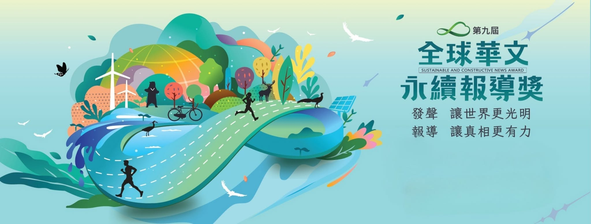
恭賀本所多位同學入圍「第九屆全球華文永續報導獎」！ 入圍名單： - 陳小明《都市更新的代價》 - 林小華《偏鄉教育困境》 - 黃小強《食安追蹤報導》 期待同學們在決賽中有優異表現！
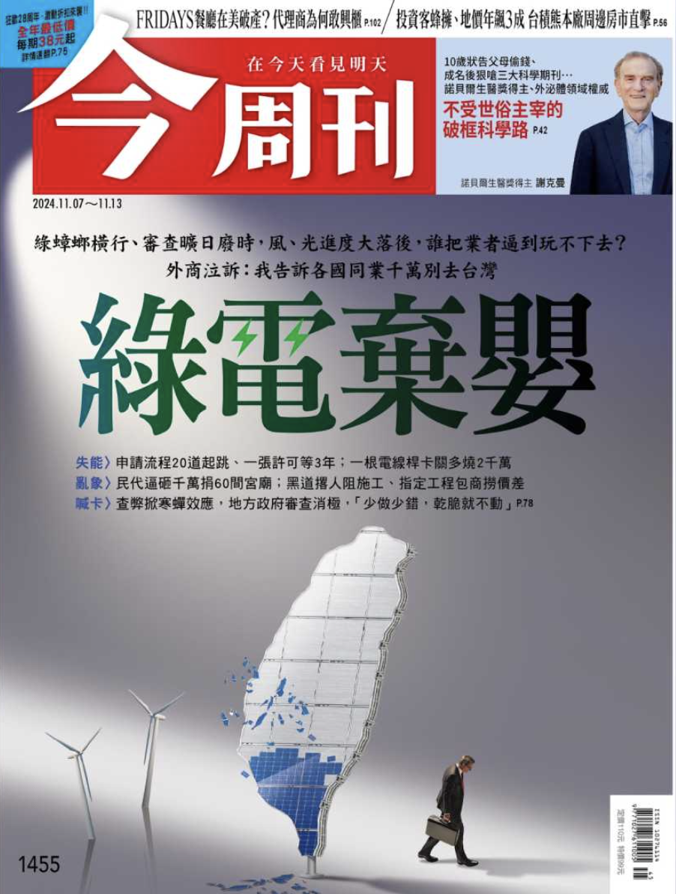
【專業組／平面類首獎】 國在山河廢-直擊營建廢棄物毀國土調查報導／聯合報 鄭朝陽 完整報導連結：https://reurl.cc/3b6LeX 【專業組／平面類社會價值獎】 綠電棄嬰／今週刊 陳燕珩、…
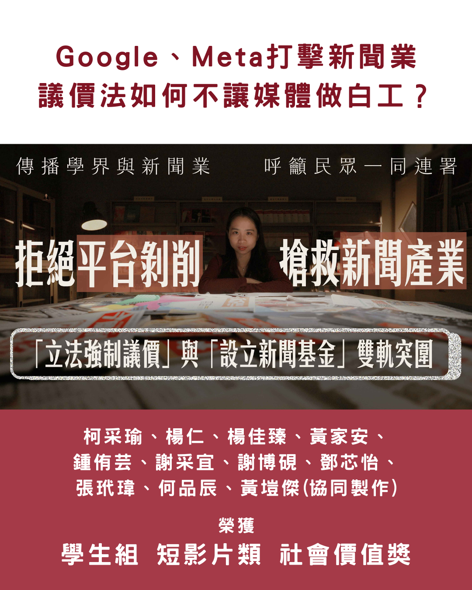
本所同學在「第九屆全球華文永續報導獎」中表現亮眼，共獲得三項大獎！ - 李明同學《氣候變遷下的農村困境》獲「深度報導獎」 - 王芳同學《海洋塑膠危機》獲「影像報導獎」 - 張華同學《綠能轉型之路》獲「…
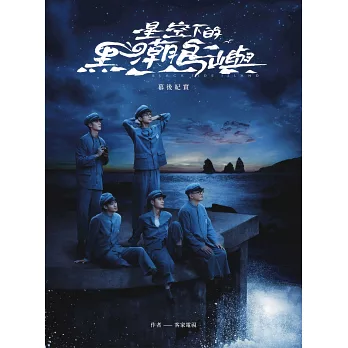
本所所友王傳宗導演、鄭凱駿參與製作《星空下的黑潮島嶼》，獲金鐘60戲劇類節目攝影獎、戲劇類節目燈光獎、戲劇類節目美術設計獎、戲劇類節目造型設計獎、戲劇類節目視覺特效獎、戲劇類節目原創歌曲獎六大獎項。 …
本所誠徵專任教師一名。 應徵資格： - 具國內外大學新聞傳播或相關領域博士學位 - 具新聞傳播學術研究或實務經驗 - 能以中英文授課 應徵方式：請備妥相關資料於114年6月30日前寄至本所。
EVENTS
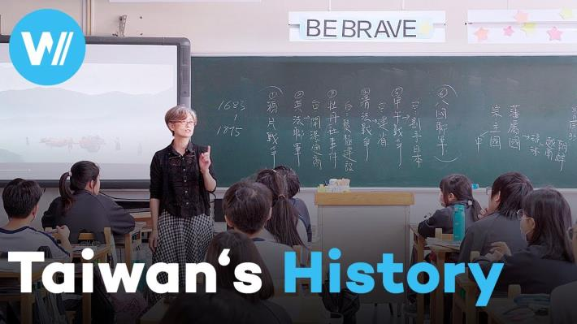
今天跟大家分享一部與本所淵源深厚的紀錄片。 這部長達一小時的作品，由本所創所初期（1992–1993）任教的聶維斌老師——同時也是本片導演 Neal E. Robbins——親自深入田野訪談與拍攝完成…
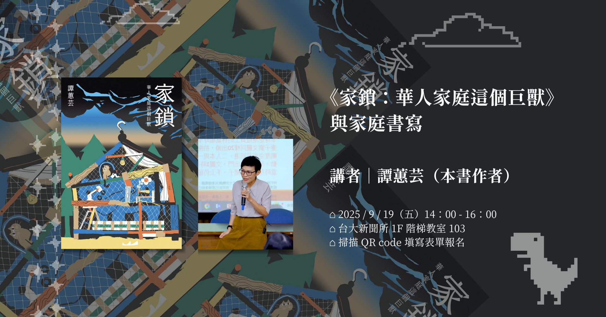
思覺失調症的哥哥、中風的父親、失智的母親，面對家庭與疾病的巨獸，排山倒海的壓力。身為小女兒的她，得先活下來...... 是記者也是作家的譚蕙芸，如何透過書寫回應與凝視自身生命經驗，去詮釋這些複雜難解的…
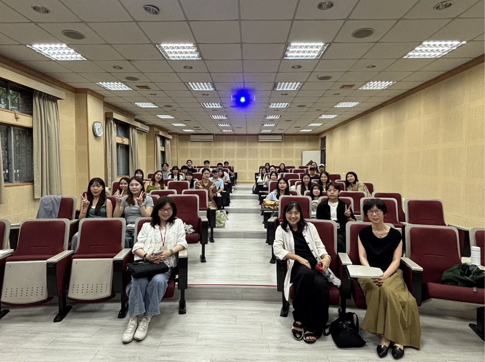
投身新聞職場四十餘年，林妏純見證報紙、電視的輝煌時代，然而，當前社群媒體使用率已經大過新聞媒體，迫使新聞產製邏輯不得不「跟著平台走」。林妏純指出，不同的平台有不同的演算法，為了在這場戰役中拿下勝利，他…
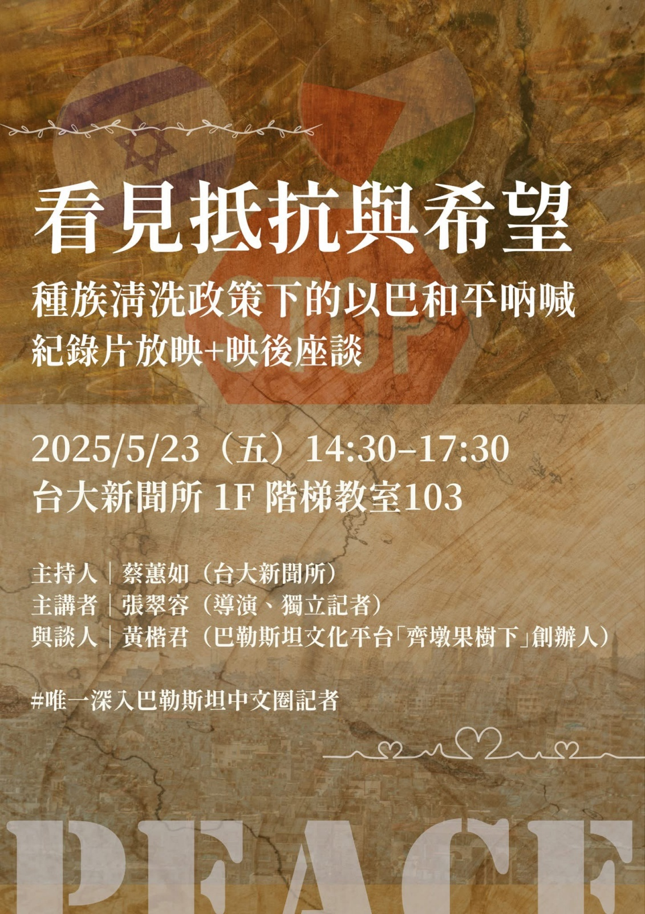
「看見抵抗與希望：種族清洗政策下的以巴和平吶喊」講座 戰爭爆發……紀錄者該站在哪裡？如何觀看與思考？ 政治與暴力如何滲透日常？我們應當以何種姿態抵抗？ 面對強力壓迫，你會選擇沉默？還是挺身而出？ 精…
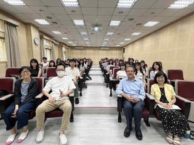
關於 Alexander Haentzschel：https://www.alexander-haentzschel.de/en/profile/
認識本所 本所介紹 宗旨與目標 新聞所圖集 聯絡我們 消息與活動 最新消息 活動資訊 國際交流 學術活動 社科院心輔室 師資陣容 專任教師 謝吉隆 副教授兼所長 林麗雲 教授 …
NEWS
EVENTS
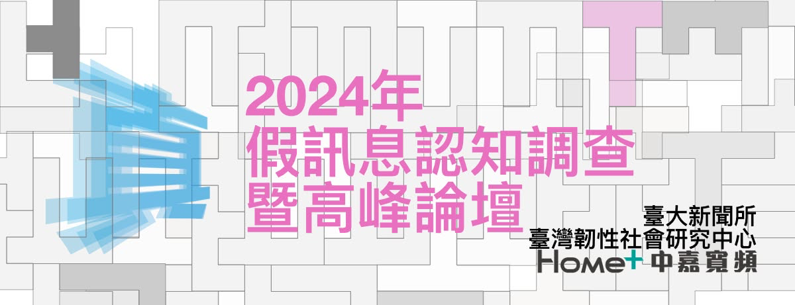
臺大新聞所 x 臺灣韌性社會研究中心【2024年假訊息認知調查暨高峰論壇】 日期：12/20 時間：13:00–16:15 地點：臺大社科院梁國樹國際會議廳 立即報名：https://form…
臺大新聞所論壇 重磅登場！ 「AI時代的新聞教育與媒體識讀：解碼技術轉型與資訊信任」 日期｜2024.12.13 (五) 時間｜上半場13:00-14:30，下半場14:45-16:15 地點｜ 臺大…
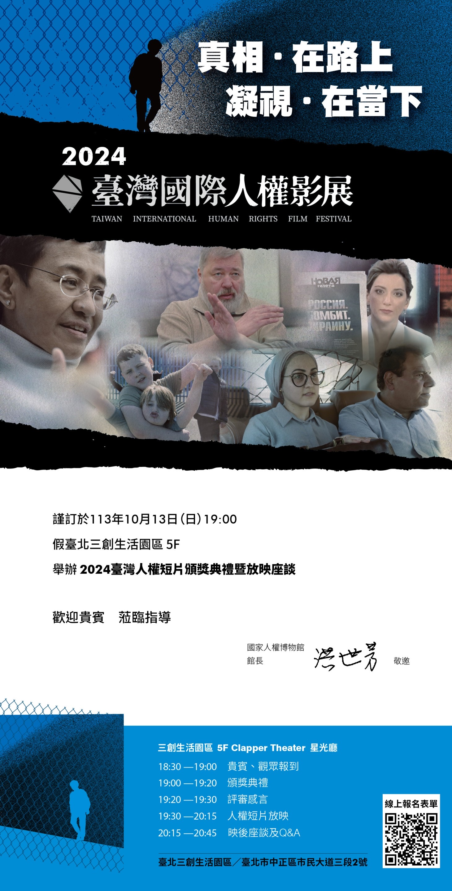
認識本所 本所介紹 宗旨與目標 新聞所圖集 聯絡我們 消息與活動 最新消息 活動資訊 國際交流 學術活動 社科院心輔室 師資陣容 專任教師 謝吉隆 副教授兼所長 林麗雲 教授 …
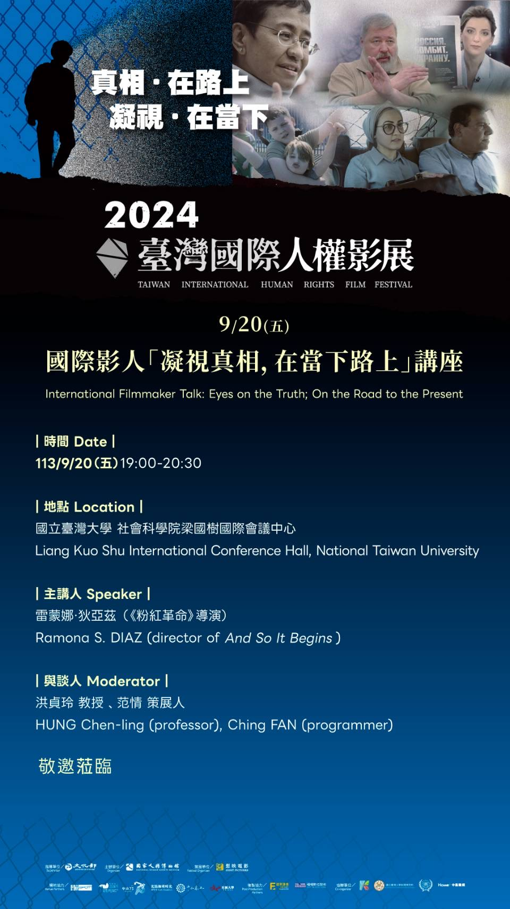
【就是明天】2024 臺灣國際人權影展《國際影人「凝視真相，在當下路上」講座》 「人權既是普世議題，更容易在日常生活視而不見。」 2024 臺灣國際人權影展《國際影人「凝視真相，在當下路上」講座》開放…
2024臺灣國際人權影展｜國際影人「雷蒙娜·狄亞茲 Ramona S. DIAZ」講座 【活動資訊】 時間：09/20 (五) 19:00-20:30 (18:30開放報到） 地點：台大社科院 310…
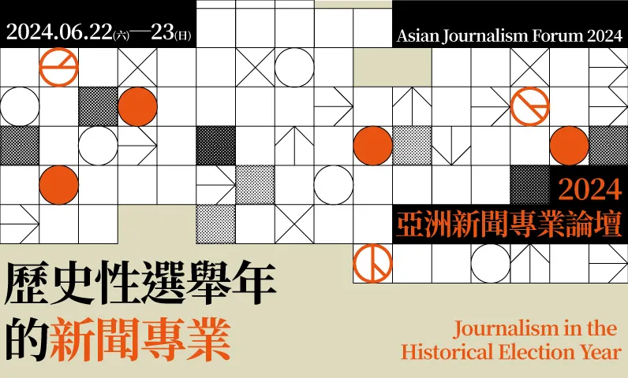
卓越新聞獎重要演講 日期：6月21日 時間：下午2:00-4:30 地點：新聞所103大教室 杉田弘毅先生是此次論壇的日本代表，杉田先生在6/21(五)下午到台大演講，杉田先生的簡歷及照片如附。 卓越…
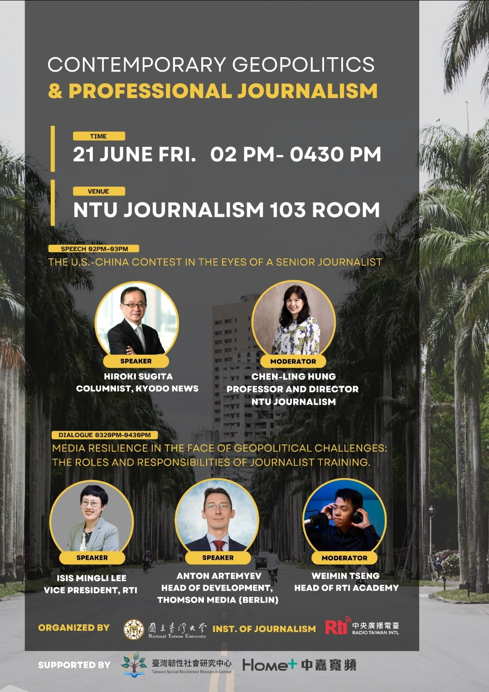
放暑假了，何不利用時間來了解重要的地緣政治、新聞專業議題，探討其中的挑戰與機遇？ 我們特別邀請到三位重量級嘉賓，免費參與，絕對收穫滿滿～期待您的參與！ 報名表單：https://docs.google…
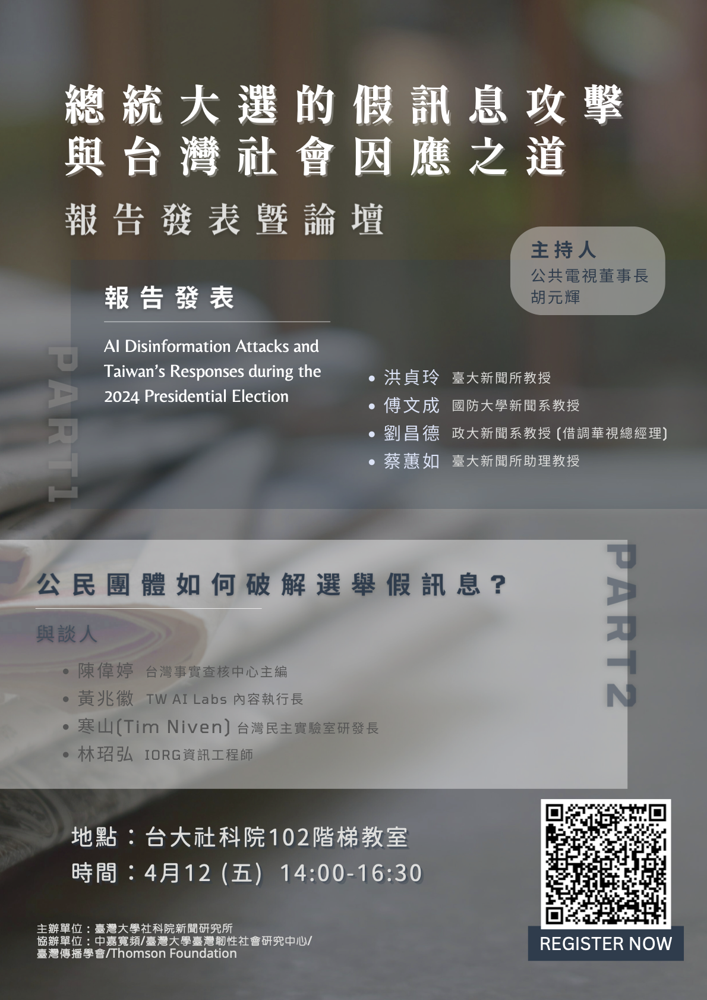
總統大選期間的假訊息攻擊與台灣社會因應之道 報告發表暨論壇 時間： 2024/4/12(五)下午2:00-4:30 地點：臺大社科院102 階梯教室(定吾講堂) 預定流程： 一、報告發表： AI Di…
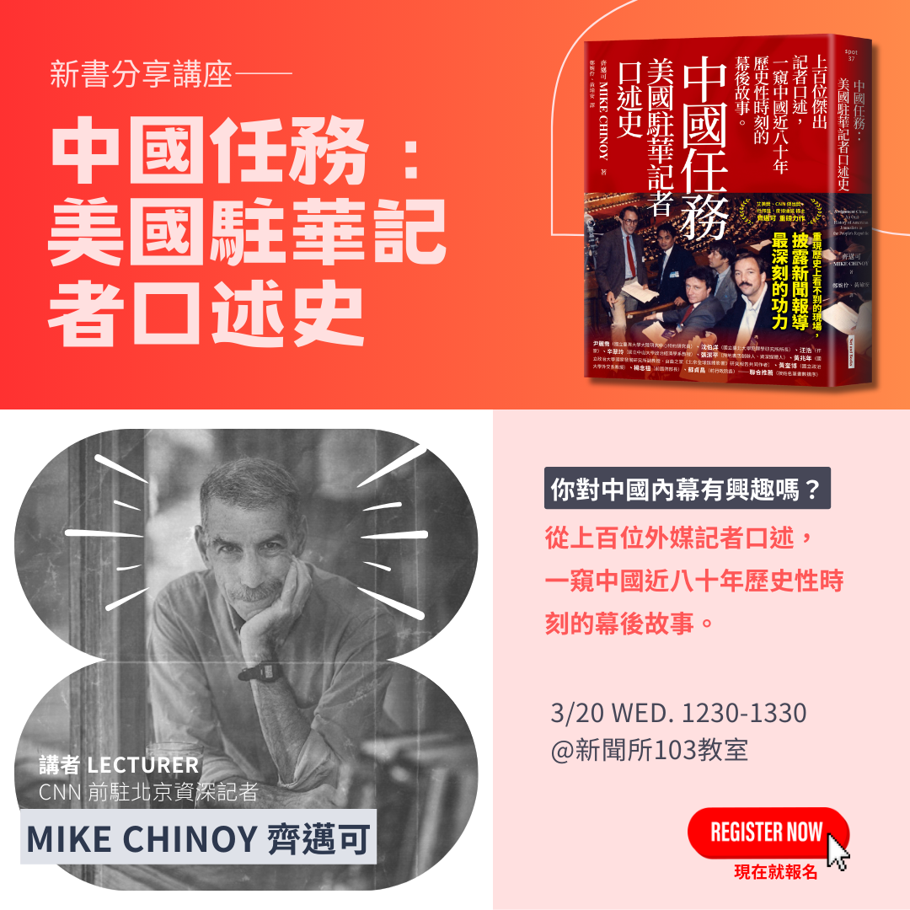
報導中國是新聞界中最艱難的任務之一，卻也至關重要 國際媒體如何報導中國，深深影響美國及其他政府的外交政策，並塑造全世界的輿論風向 3月20日新聞所邀請到首任 CNN 北京分社社長 Mike Chino…
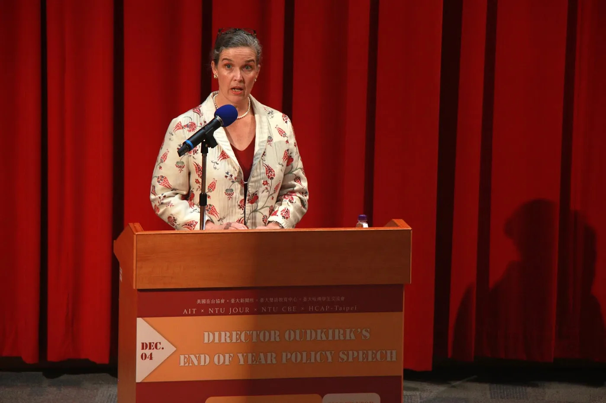
國立臺灣大學新聞研究所與雙語教育中心共邀美國在台協會（AIT）處長孫曉雅（Sandra Oudkirk）以2023年度政策報告為題，於12月4日下午至臺大發表演講。孫曉雅處長回顧今年度政策、工作心得與…
NEWS
EVENTS
美國在台協會處長孫曉雅 網路安全與假訊息 臺大新聞所與雙語教育中心共同邀請到美國在台協會（AIT）孫曉雅處長 網際網路帶來極大的便利徹底顛覆生活 無論是資訊安全與紛擾難辨真假訊息都在考驗人類的社會 並…
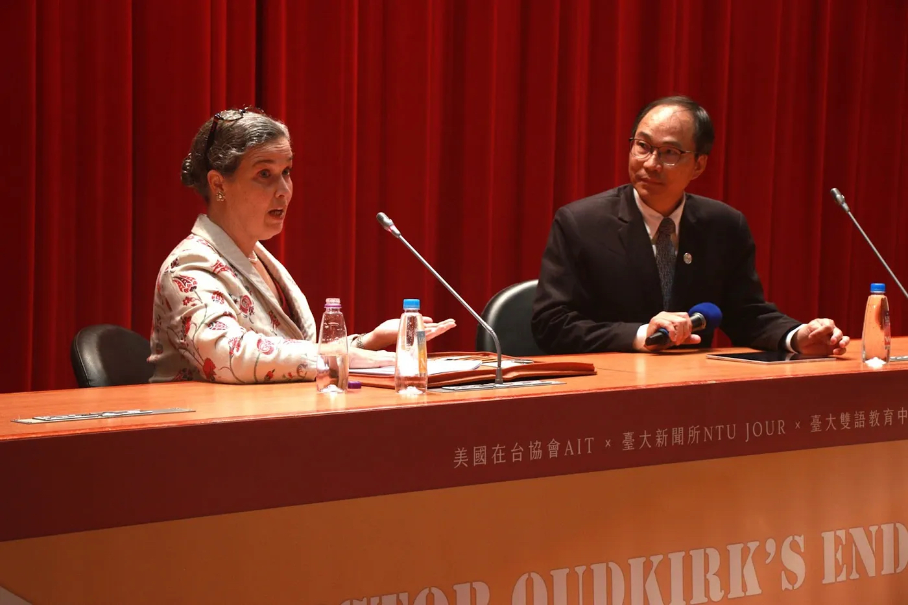
美國在台協會（AIT）處長孫曉雅（Sandra Oudkirk）2023年12月4日至國立臺灣大學演講，盛讚臺灣的民主與性別平等，面對中國的資訊戰、假訊息攻擊，也做了相當完善的保護措施。作為美國在台協…

臺灣事實查核基金會再度委託民間調查單位及臺大學者執行「假訊息年度調查」，結果指出民眾對於假訊息的警覺提高，使用查核工具識假的比例亦提升。調查也發現，事實查核有助於民眾釐清真實，但人們的黨派立場影響其對…
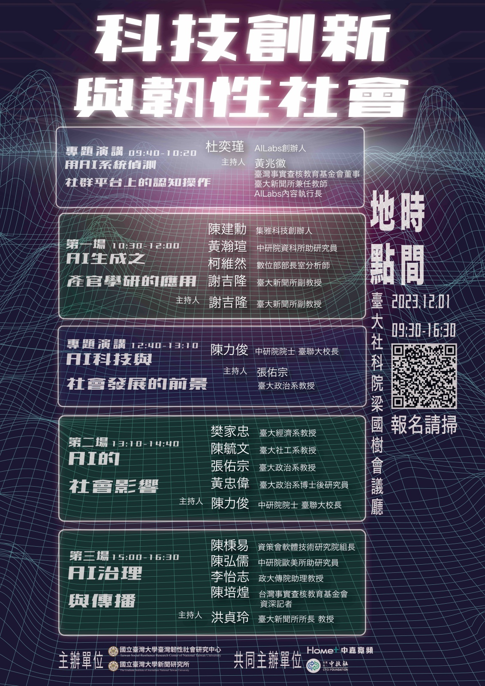
選舉將至，社群平台充斥多方消息，你知道AI系統能怎麼協助偵測嗎？ AI生成技術還有哪些潛力等待開發和應用呢？ 如果AI對社會帶來不平等的影響時，我們怎麼成為更加負責、縮小差距的使用者？又如何重新建構A…
今天跟大家分享一部與本所淵源深厚的紀錄片。 這部長達一小時的作品，由本所創所初期（1992–1993）任教的聶維斌老師——同時也是本片導演 Neal E. Robbins——親自深入田野訪談與拍攝完成…

由臺灣事實查核基金會委託民間調查單位及臺大社科院執行的「2023年假訊息年度調查」於5月19日發表，也邀請學者專家及政府官員對此調查發表意見。與會者表示，民眾收到假訊息的比例上升，顯見大家對假訊息的「…
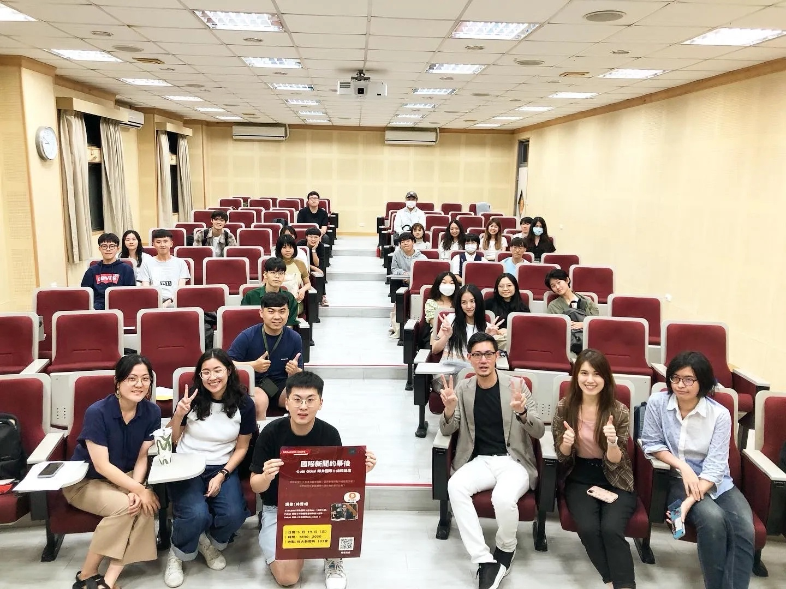
林齊晧也表示，臺灣人普遍較不重視國際新聞，臺灣也欠缺具國際影響力的媒體。他也提及，許多人會問他們：「如何用臺灣視角寫國際新聞？」但他認為，比起「臺灣視角」，更重要的是如何好好把故事說清楚。如安倍晉三逝…
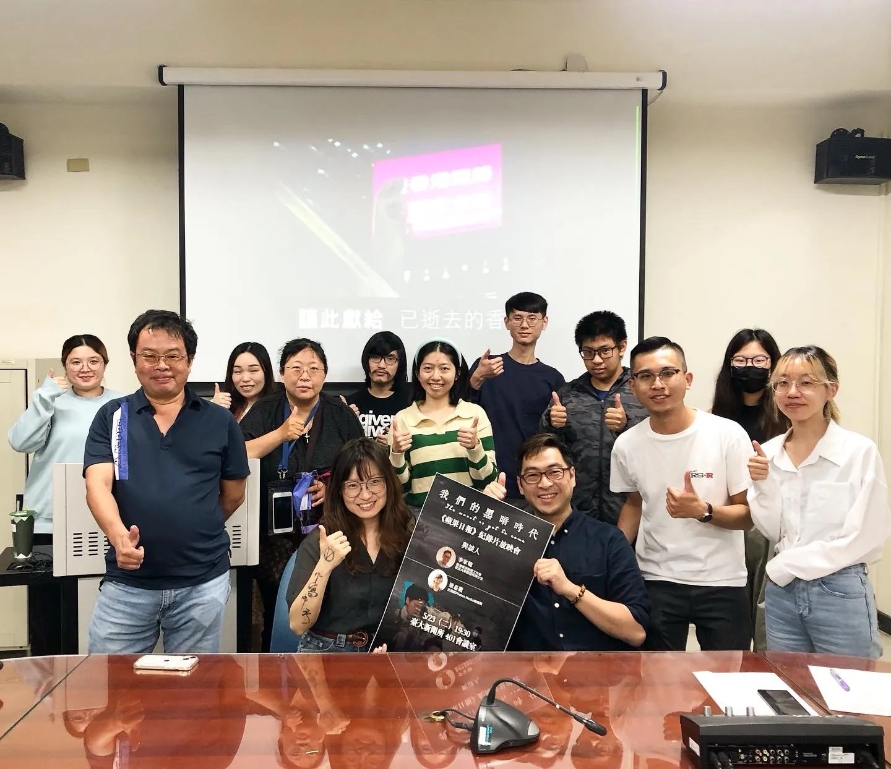
香港在《國安法》正式實施後，媒體環境受到嚴重限制，一些香港媒體人決定出走，到海外建立新的網路媒體，試圖將當今香港主流媒體不報的新聞，繼續報導給所有的香港人。 《我們的黑暗時代》是《蘋果日報》製播的20…
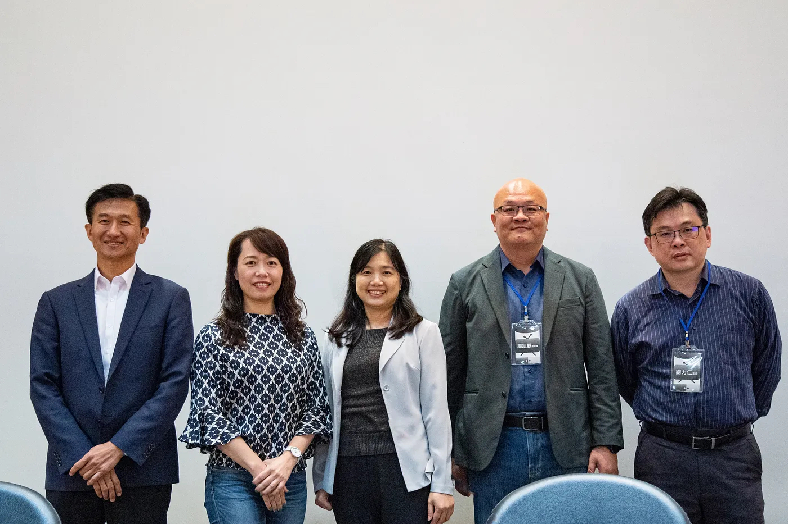
全球化下，國際新聞躍上新聞版面，地方新聞人力與版面則不斷縮編。4月21日，臺大新聞所在臺大法律系霖澤館辦理論壇「全球化、地方新聞與永續發展」，第一場主題為「愈在地、愈全球 — — 台灣地方新聞現況」，…
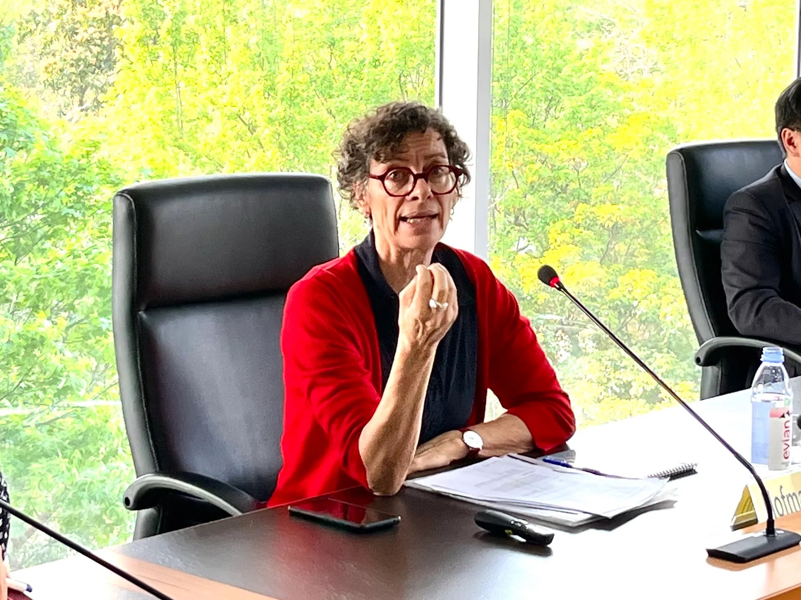
Hofmann 是德國紅堡德網路與社會研究所（The Humboldt Institute for Internet and Society）創所執行長，專長歐盟數位治理、德國數位法制以及網路與民主的…
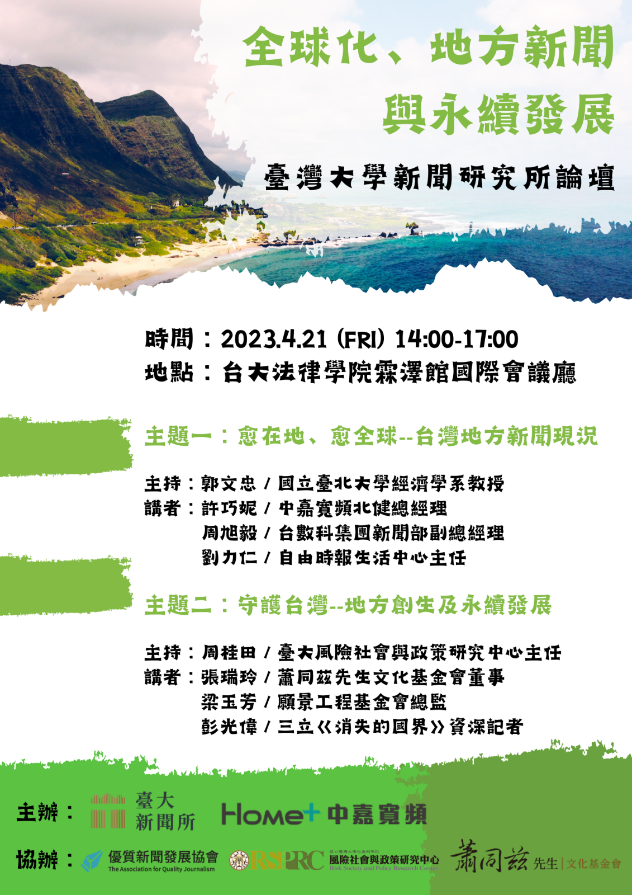
臺大新聞所論壇 主題：「全球化、地方新聞與永續發展」 時間：2023.4.21 (Fri) 地點：台大法律學院霖澤館國際會議廳 報名連結：https://forms.gle/hLdroLysqsSTz…
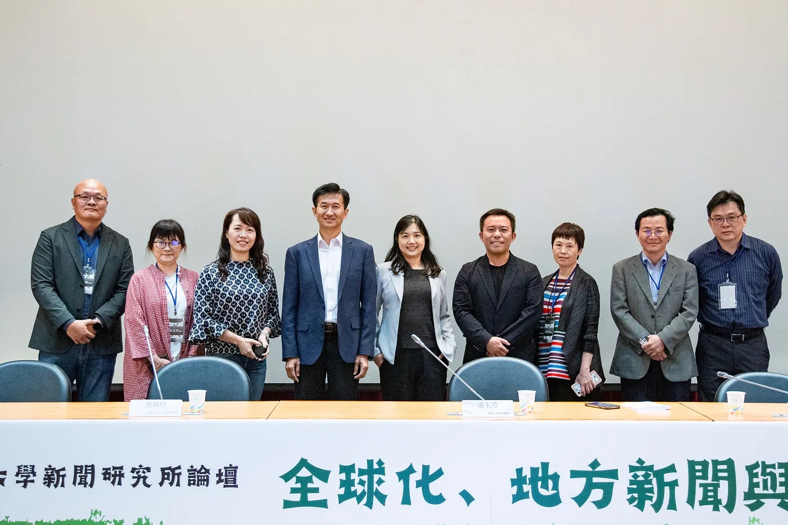
當「永續發展」的概念在國際間愈加重視時，臺灣媒體整體而言對此關注度卻不高。4月21日，臺大新聞所在臺大法律系霖澤館辦理論壇「全球化、地方新聞與永續發展」，第二場主題為「守護台灣 — — 氣候變遷及永續…
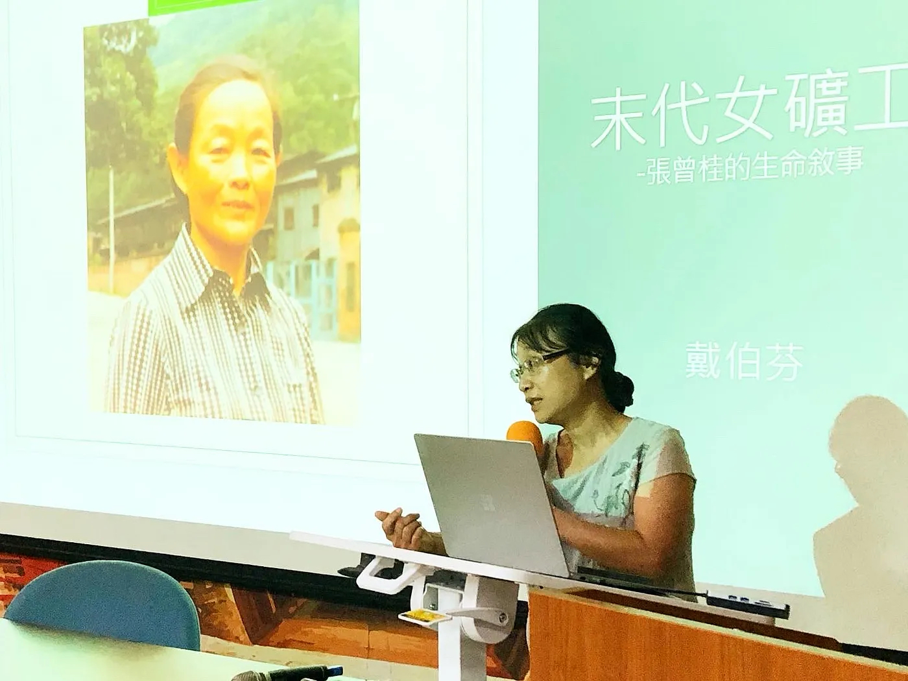
當AI時代來臨，為何我們還需要走入現場？幾位非虛構寫作者以自身「在場」的經驗說明，唯有進到他人生命的田野，才能挖掘出不被看見的歷史故事，才能避免被偏頗的資訊框架住，才能真實感受到人的溫度與情緒。 從阿…
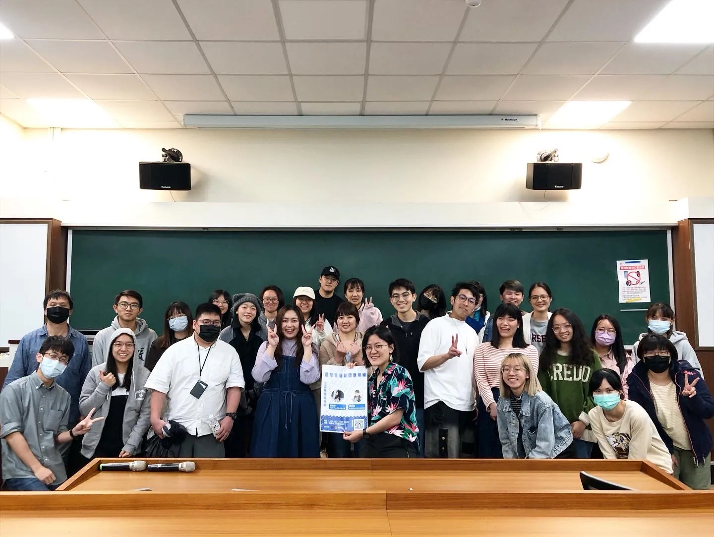
關注被否定的弱勢，讓大家想看社福專題新聞 過去在出版社擔任編輯七年的期間，某次葉靜倫想要編一本與「逃跑移工」有關的書籍時，業務部同事一句：「社會弱勢，在市場上也是弱勢。」這句話讓她一直記在心上。隨後接…
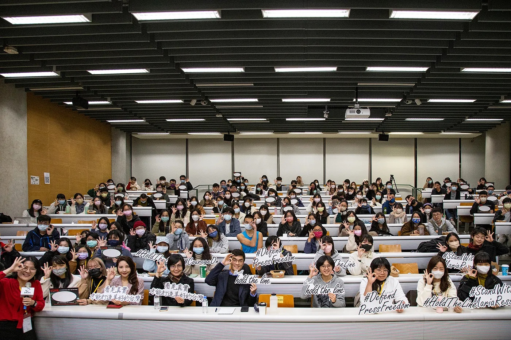
在不實資訊滿天飛的世代，你對新聞媒體是否還抱持希望？2月22日，臺大新聞所學生會與臺灣事實查核教育基金會合作，主辦《A Thousand Cuts》紀錄片放映會。該片揭露在菲律賓杜特蒂強人政權下，獨立…
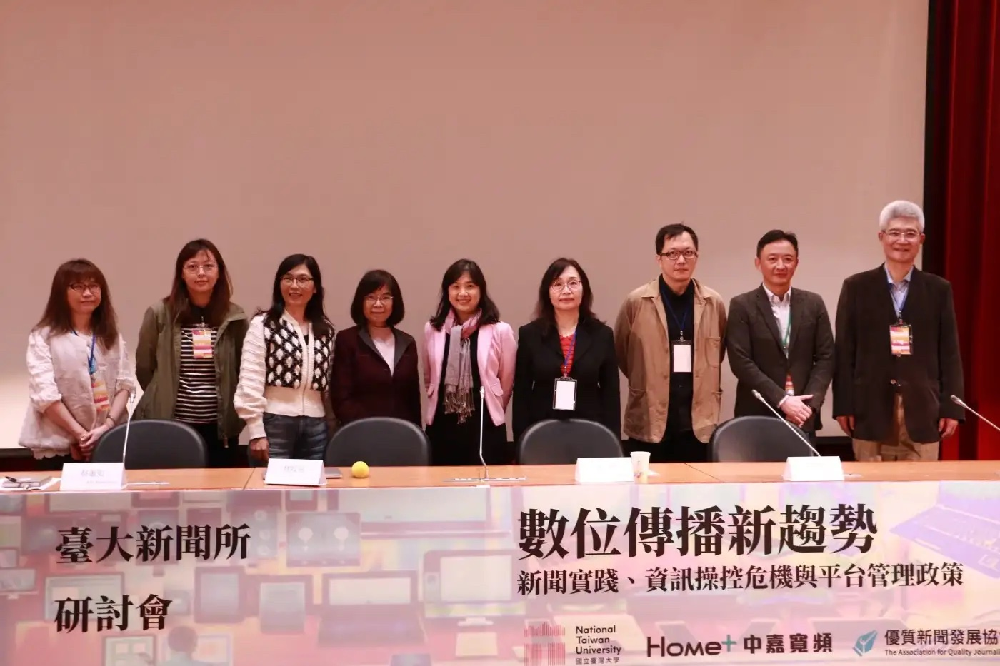
數位浪潮下民眾接收新聞的習慣改變，也危及傳統媒體的營收及影響力。該如何因應平台對傳統媒體經營型態的破壞，學者專家及媒體業者認為，應致力於產製優質內容、加速數位轉型，並優化閱聽人體驗，同時也應向平台爭取…
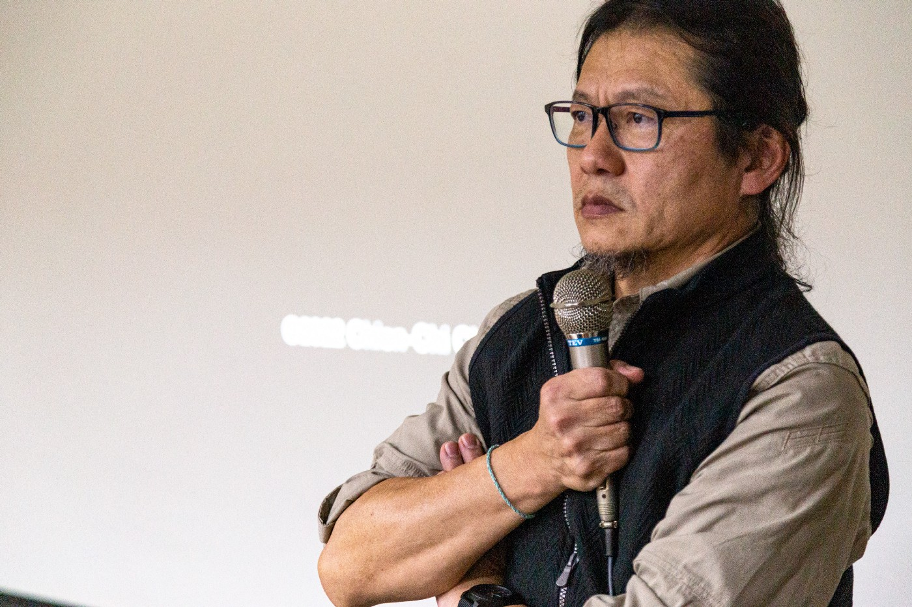
今年61歲的張乾琦，被譽為「帶著相機的詩人」，是全球頂尖紀實攝影組織「馬格蘭攝影通訊社」（Magnum Photos）的終身會員，也是唯一的台灣人。他的重要作品，包括紀錄高雄龍發堂患者的《鍊》、紐約華…
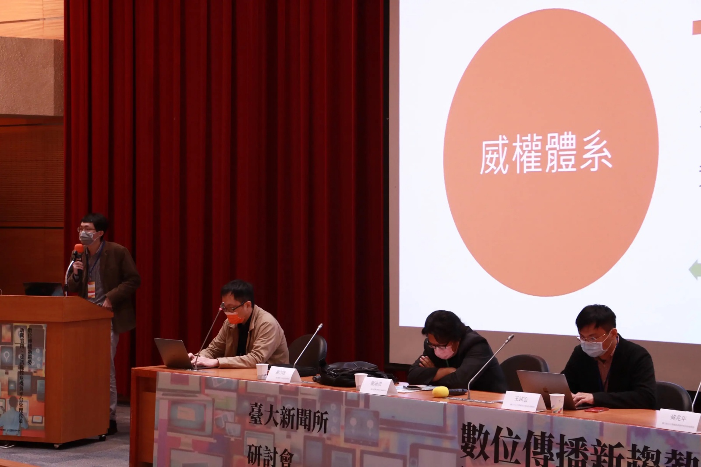
隨著疫情、選舉、中國議題成為近期台灣社會的關注焦點，相關假消息、陰謀論也在網路上擴大流傳。面對不實訊息，學者建議從科技、法律面向管制，也指出媒體的自我培力及民眾的識讀能力，才是因應資訊危機的重要關鍵。…
NEWS
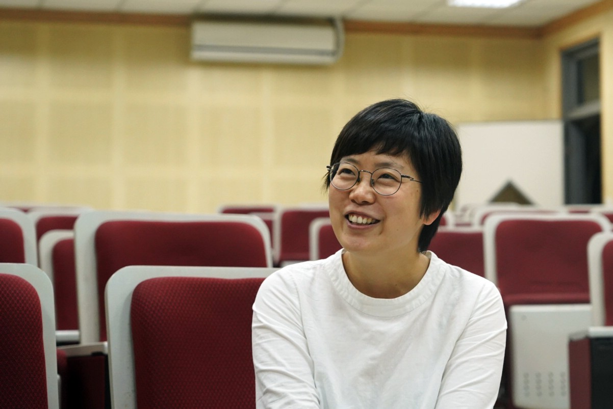
台大新聞所《兩岸三地新聞專題》教師張潔平（攝影／房荷庭） 2022 年起，新聞所新聘三位實務兼任教師，補充實務課程的新能量！ TVBS 新聞部副總經理詹怡宜、影像工作者兼過癮科技創辦人鄭凱駿合作開授《…
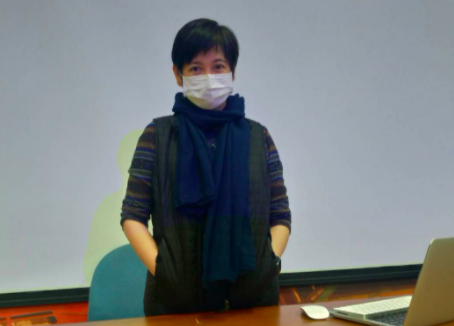
2022 年起，新聞所新聘三位實務兼任教師，補充實務課程的新能量！ TVBS 新聞部副總經理詹怡宜、影像工作者兼過癮科技創辦人鄭凱駿合作開授《影像報導二》，遞補前公視經理林樂群退休後的專業空缺；屢獲華…
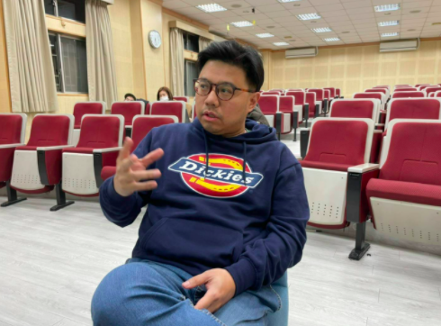
2022 年起，新聞所新聘三位實務兼任教師，補充實務課程的新能量！ TVBS 新聞部副總經理詹怡宜、影像工作者兼過癮科技創辦人鄭凱駿合作開授《影像報導二》，遞補前公視經理林樂群退休後的專業空缺；屢獲華…
EVENTS
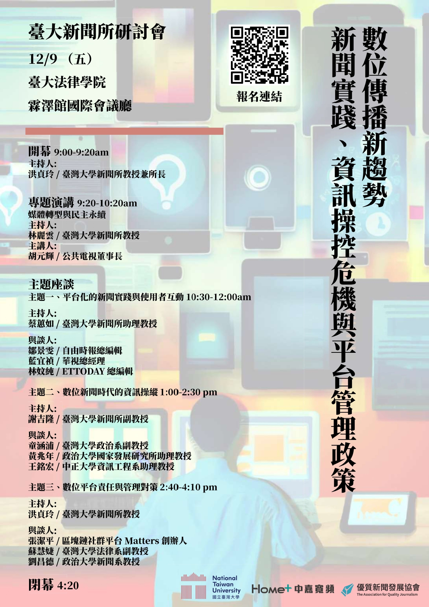
【臺大新聞所研討會】數位傳播新趨勢：新聞實踐、資訊操控危機與平台管理政策 時間: 2022. 12.9 (Fri) 9:00-16:20 地點: 臺大法律學院霖澤館國際會議廳 報名連結：https:…
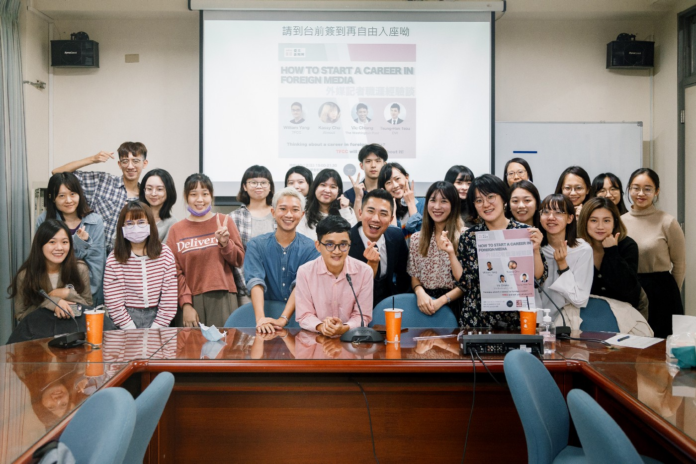
從日常精進語言能力，培養多元技能 想進入外媒工作，語言能力是基本條件。蔣曜宇建議，平時盡量身處英文環境，透過長期的閱讀與寫作累積實力。在實務應用方面，鄒宗翰指出，由於每家媒體性質不同，因此了解受眾是誰…
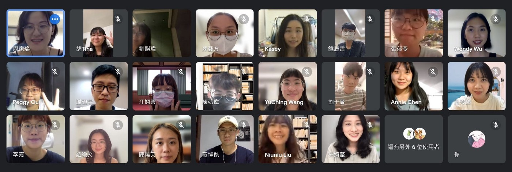
臺大的交換學習資源，分布在校級、院級甚至是各科系層級，琳瑯滿目的校系名單該如何選擇？每個同學的考量與策略不同。目前在日本神戶大學交換的林綺薇表示，相較於院級交換，校級最大的好處是可以擁有較多科系選擇。…
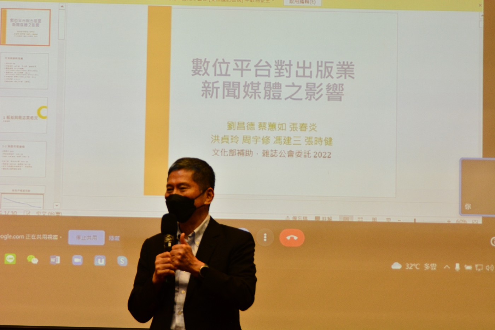
台灣首度平面新聞產業調查結果公布，文化部長李永得回應指出，新聞業與大型平台關係失衡，影響言論自由、民主體制，政府勢必要有所介入，「文化部的基本立場是支持新聞付費」。成大特聘教授、前政務委員郭耀煌也建議…
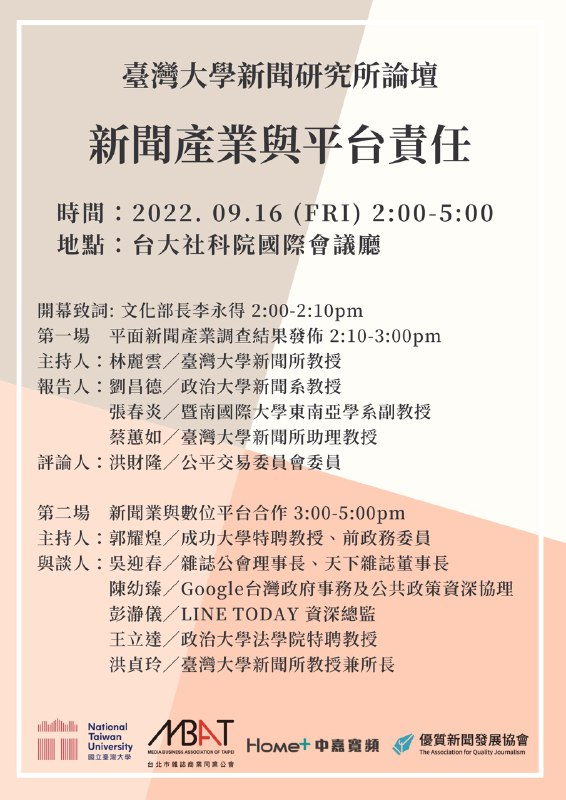
數位匯流下，資訊服務、內容流通與廣告資金大幅轉向數位平台，傳統新聞產業的內容產製與營收模式面臨巨大挑戰與衝擊。面對數位廣告襲奪的趨勢，各國政府開始推動立法與政策因應。歐洲推出著作鄰接權規範、澳洲制定新…
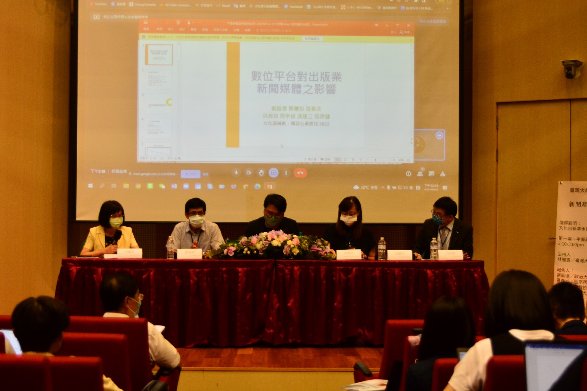
台灣首個平面媒體產業調查結果公布，印證新聞業雪崩式衰頹的慘況！調查結果呈現三大重點：新聞消費市場萎縮、廣告營收衰退，以及新聞工作機會減少。平面新聞業營收大幅衰頹，尤其報紙十年營收幾乎砍半；相對地，數位…

面對新聞業營收大幅下滑，使用新聞內容的數位平台該如何負責？台大新聞所所長洪貞玲提出四種路徑，包括市場力與議價模式、著作鄰接權模式、設置基金或是課徵稅金等模式，呼籲平台業者與新聞業界真誠溝通，協商出共識…
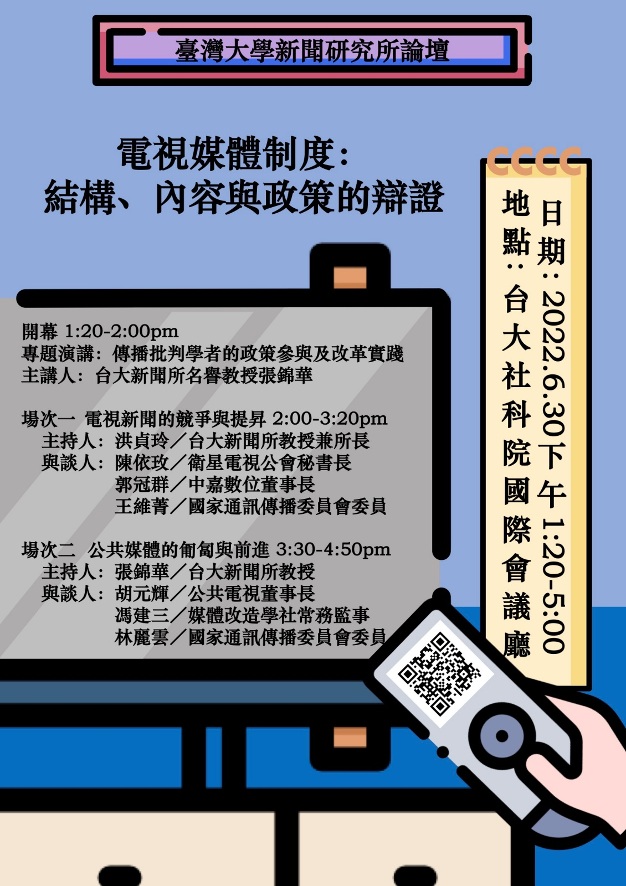
在數位化浪潮下，傳統媒體面臨多重挑戰，然而電視仍是台灣民眾最主要的接收資訊來源，尤其是電視新聞。本次論壇以電視媒體制度為主要討論議題，關切商業電視與公共電視的發展。論壇分成兩場，包括電視新聞的競爭與提…
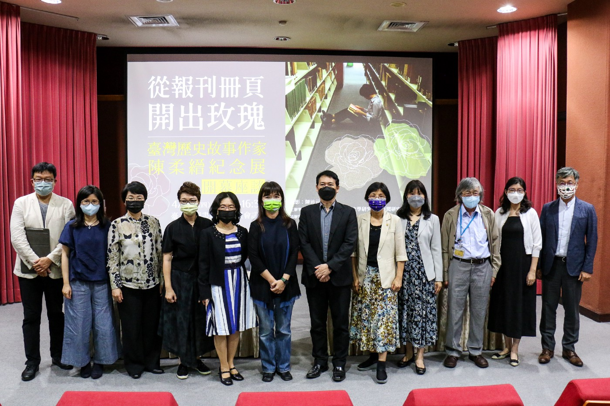
國立臺大大學圖書館4月28日推出陳柔縉紀念展並舉辦開幕座談，邀請多位媒體人及學者共襄盛舉。（攝／鄭曉雯） 台灣文史作家陳柔縉於2021年末意外過世，徒留遺憾。為紀念這位驟逝的書寫大家，台大圖書館於4月…
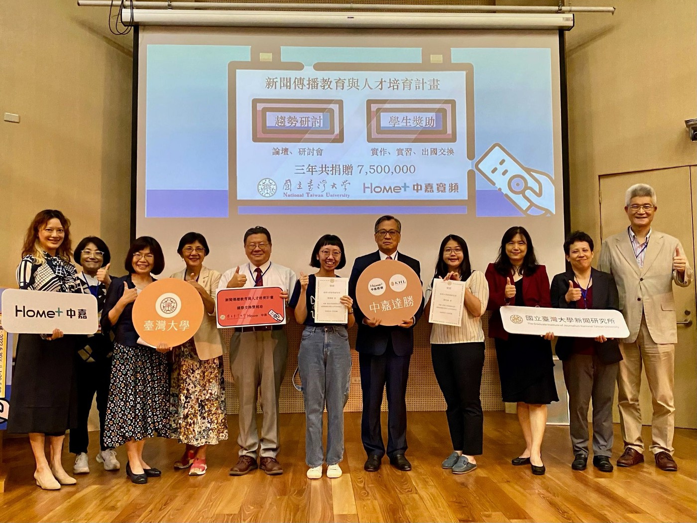
台大新聞所今（30）日舉辦「電視媒體制度」論壇，從產業結構、內容品質與政策規劃三面向切入，探討商業電視與公共電視的發展。會中邀集產、官、學界代表，指出電視新聞的市場產業變化以及提供活水的建議，新任公視…
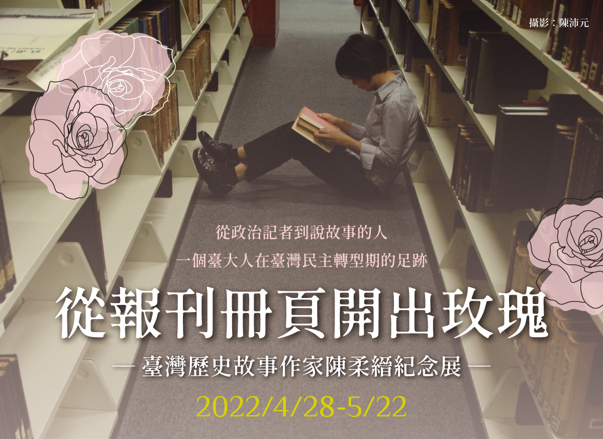
陳柔縉是當代最出色的臺灣歷史故事作家・傑出的調查報導記者。在其慧眼與妙筆下，諸多龐雜的訃聞記事、名錄廣告，竟能編織出政商家族系譜，蔓延綻放時代人物的精采故事。 成長於臺灣民主轉型關鍵時代的陳柔縉，著作…

台灣事實查核教育基金會與台大新聞所，舉辦2022年假訊息年度調查發表暨高峰論壇，邀請產官學三方共襄盛舉。（攝/鄭曉雯） 台灣事實查核教育基金會與台大新聞所，舉辦2022年假訊息年度調查發表暨高峰論壇，…
解嚴之後不久，臺大新聞所於 1991 年成立，至今已經三十年！三十年來，我們見證臺灣民主化過程中，新聞業從威權侍從走向專業自主；也見證網路興起後，傳統媒體由盛轉衰並苦思出路，數位平台上眾聲喧嘩卻也百病…
日期：2021/10/12（二） 時間：19:20 - 21:30 地點：台大新聞所 103 室 人數：30 人 注意事項：進場時將會記名，請配戴口罩，並保持安全距離 報名連結：https://doc…